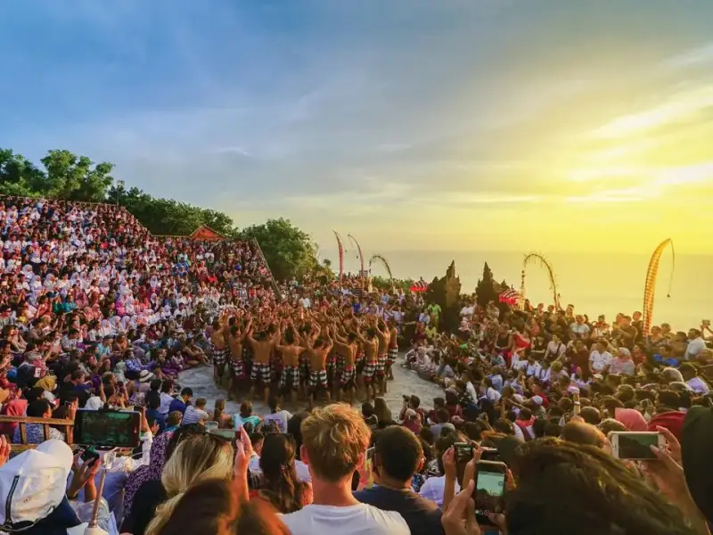

Apa itu Kecak
Tari Kecak adalah tarian tradisional Bali yang melibatkan gerakan ritmis dan suara "cak" dari para penari pria, sering dikombinasikan dengan cerita Ramayana. Ini bukan hanya tarian, tapi juga ritual yang menghubungkan manusia dengan energi spiritual.
Sejarah & Evolusi
1930-an: Diciptakan oleh Wayan Limbak dan Walter Spies.
Modern: Berkembang menjadi atraksi wisata, tetap mempertahankan esensi ritual.
Struktur Pertunjukan
- 🔥 Pembukaan dengan suara cak ritmis.
- 👤 Penari utama memerankan Hanoman.
- 🎭 Klimaks dengan gerakan energik.
Kostum & Properti

Penari menggunakan kain sarung dan aksesori api-simbolik.
Fakta Cepat
Melibatkan 50-100 penari pria.
Berlangsung 45-60 menit.
Simbol api sebagai energi kehidupan.
Populer di Uluwatu dan GWK.